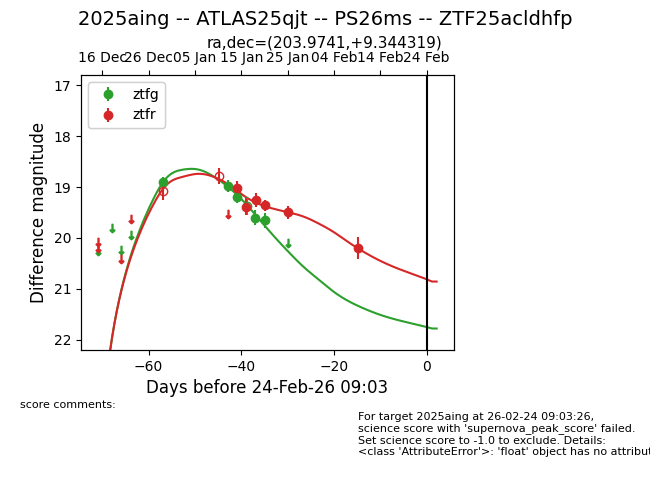
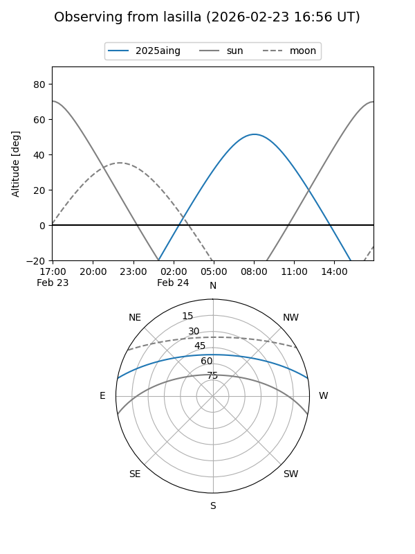
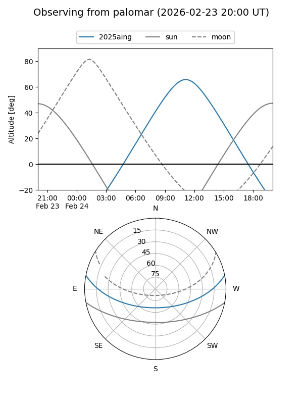
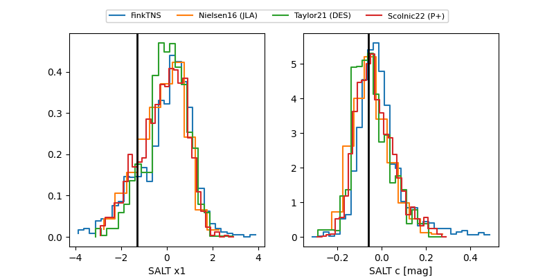

2025aing
Target 2025aing at 2026-01-16 16:20
Aliases and brokers:
FINK: link
Lasair: link
ALeRCE: link
TNS: link
YSE: link
alt names
ZTF25acldhfp (ztf,fink_ztf)
2025aing (tns,yse)
ATLAS25qjt (atlas)
Coordinates:
equatorial (ra, dec) = 203.9741,+9.34432
equatorial (HMS+DMS) = 13:35:53.78,+09:20:39.55
galactic (l, b) = (335.5705,+69.34860)
Flags:
Photometry:
last ztfg=19.19, ztfr=19.38
3 ztfg, 2 ztfr detections
Lightcurve

Visibility


Additional plots
